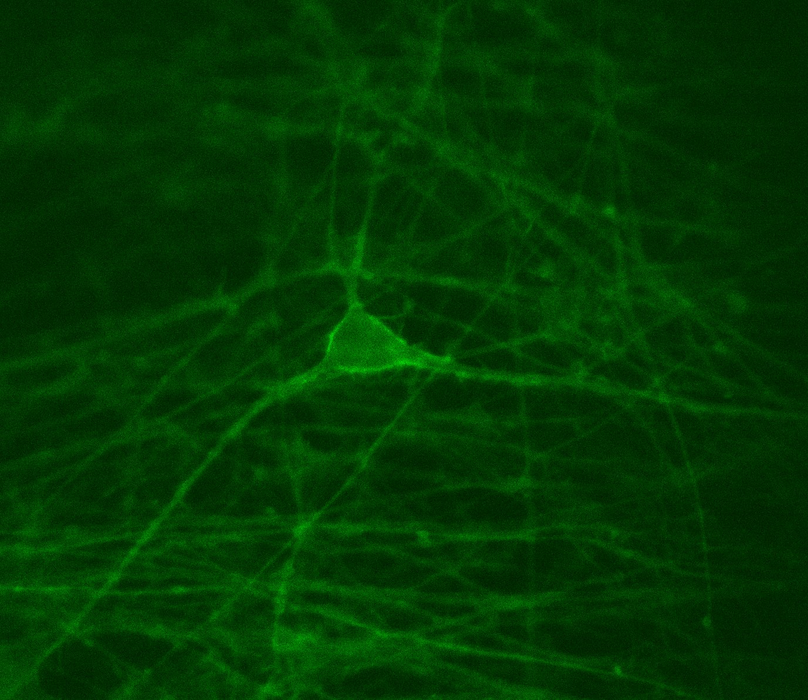
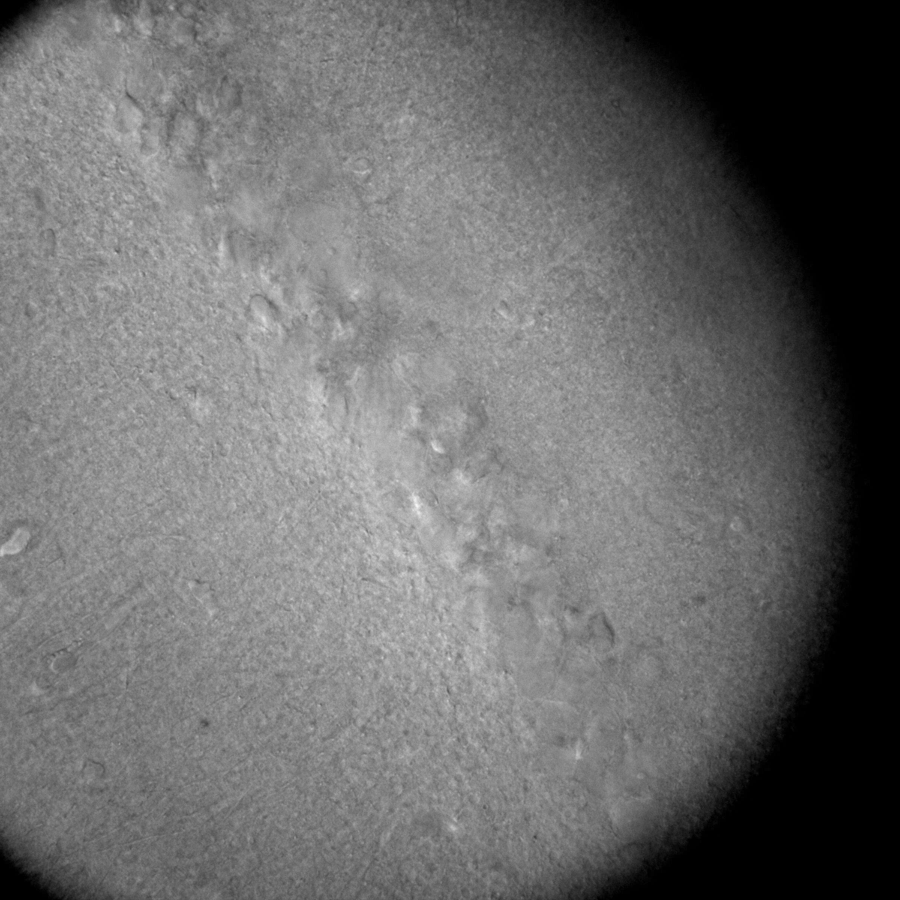

Spying on Neurons
Neurons with noninvasive voltage sensor expression
Synchronicity
Calcium waves in human iPSC-derived neurons

Circuit Integration
Investigating the hub of learning and memory.
Research
Dissecting Neuronal and circuit properties in channelopathies to accelerate treatment
People
Those that do the actual work.
Contact
scott.adney@northwestern.edu